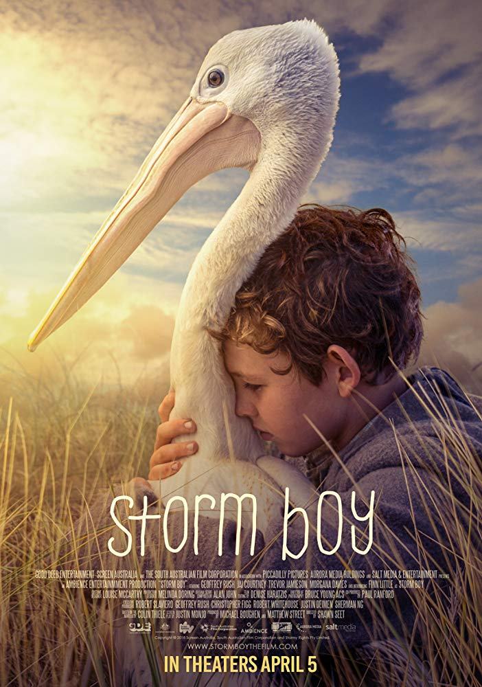

Divino Amor - Brazil
DIRECTOR: Gabriel Mascaro
"It tells the story of a deeply religious registry office clerk who uses her position at the births, deaths and marriages department to try to disuade couples from getting a divorce."
SHOWTIMES
May 17th - May20th
LOCATIONS
Central High School - West Campus @ 6 PM
Regal Theater @ River Park @ 5:30 PM
Mother, I Am Suffocating. This Is My Last Film About You. - Lesotho, Germany, Qatar
DIRECTOR: Lemohang Jeremiah Mosese
"The film depicts the scenario of personal experiences of the director after his departure from Lesotho who now resides in Germany...The film also received several nominations at international film festivals and was rated as one of the best African films of 2019."
SHOWTIMES
May 17th - May 20th
LOCATIONS
Historic Crest Theatre @ 11:55 PM
Regal UA Broadway Faire @ 4 PM
The Body Remembers When the World Broke Open - Canada
DIRECTOR: Elle-Máijá Tailfeathers & Kathleen Hepburn
"The film centres on the interaction between Áila (Tailfeathers), a First Nations woman with a stable and happy domestic life, and Rosie (Violet Nelson), a more impoverished First Nations woman who has just been a victim of domestic abuse, after they meet in the street."
SHOWTIMES
May 17th - May 20th
LOCATIONS
Fresno Pacific University @ 10 AM
Historic Crest Theatre @ 6 PM
Detention - Taiwan
DIRECTORS: John Hsu
"Set in 1962 during Taiwan's White Terror period, a boy and a girl are trapped alone at their hillside high school at midnight. While trying to escape and find their missing teacher, they encounter ghosts and the dark truth of their fate."
SHOWTIMES
May 17th - May 20th
LOCATIONS
John Wright Theatre @ Fresno State @ 10 PM
Central High School - West Campus @ 11:55 PM
Quiet Comes the Dawn - Russia
DIRECTOR: Pavel Sidorov
"Svetlana’s brother dies under mysterious circumstances. Extremely vivid nightmares begin to haunt her and she decides to turn to the Institute of somnology for help. She and other patients are induced into a collective lucid dream. But at dawn, they awake to a completely different reality that is more horrifying than any nightmare."
SHOWTIMES
May 17th - May 20th
LOCATIONS
Fresno Pacific University @ 2 PM
Regal UA Broadway Faire @ 11:55 PM
Storm Boy - Australia
DIRECTOR: Shawn Seet
"Based on the book, Storm Boy follows a young boy growing up on a largely uninhabited coastline of Southern Australia. He rescues three orphan pelicans and forms a close bond with them."
SHOWTIMES
May 17th - May 20th
LOCATIONS
Historic Crest Theatre @ 11 AM
Regal Theater @ River Park @ 4 PM